Environment Setup
Container Management Tools
The following tools are required for running the exercises in this tutorial. Please have them installed and configured before you get started with any of the tutorial chapters.
| Tool | Fedora | Debian | macOS |
|---|---|---|---|
|
|
|
|
|
|
|
|
ODF Operator
You can use the OpenShift Container Platform web console to install Quay prerequisites.
-
Open a browser window and log in to the OpenShift Container Platform web console.
-
From the Administrator perspective, click Operators → OperatorHub.
-
In the Filter by keyword field, type
ODF.
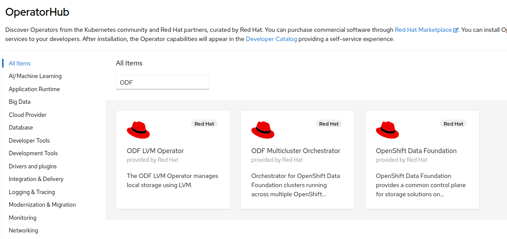
-
Select the OpenShift Data Foundation tile and click Install.
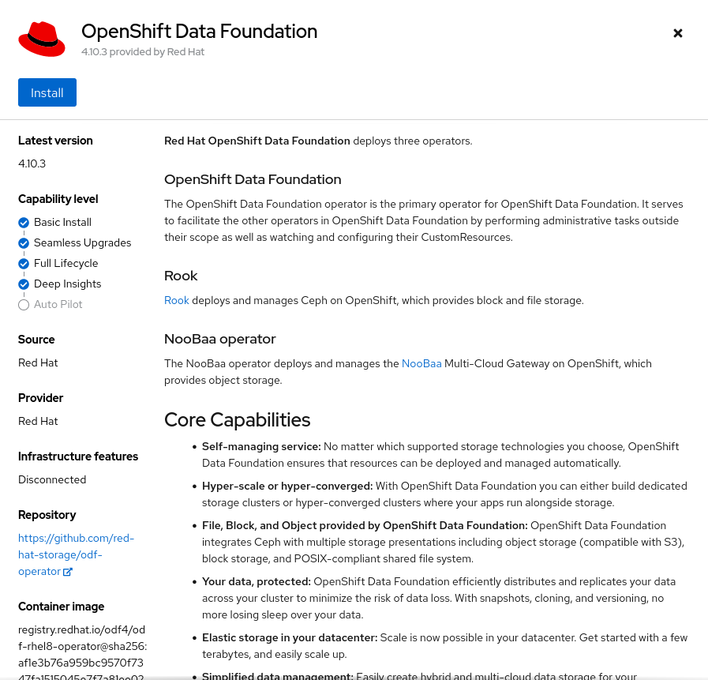
-
On the Install Operator page select
stable-4.10from the list of available Update Channel options. ChooseA specific namespace on the clusterand leave the default vaule of Installed Namespace asopenshift-storage. Update approvalAutomatic. Console pluginEnable.
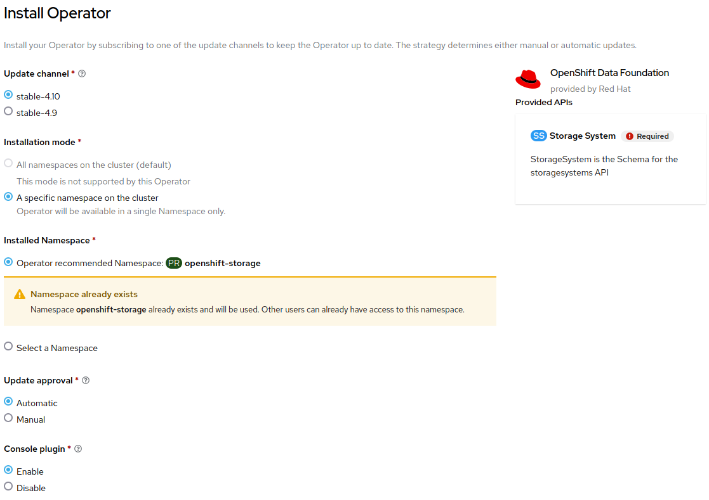
-
Click
Install.
Creating the StorageSystem instance
To use the ODF Operator a StorageSystem instance is required. This is an example for an OCP standard and fresh installation (RHPDS) and may vary depending on your environment.
-
From the Administrator perspective, click Operators → Installed Operators.
-
Select
openshift-storageproject and OpenShift Data Foundation. -
Click on
Create StorageSystembutton.
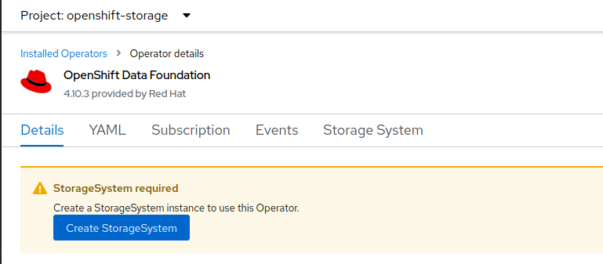
-
On the Create StorageSystem select
Use an existing StorageClassand thegp2storage class. Click Next.
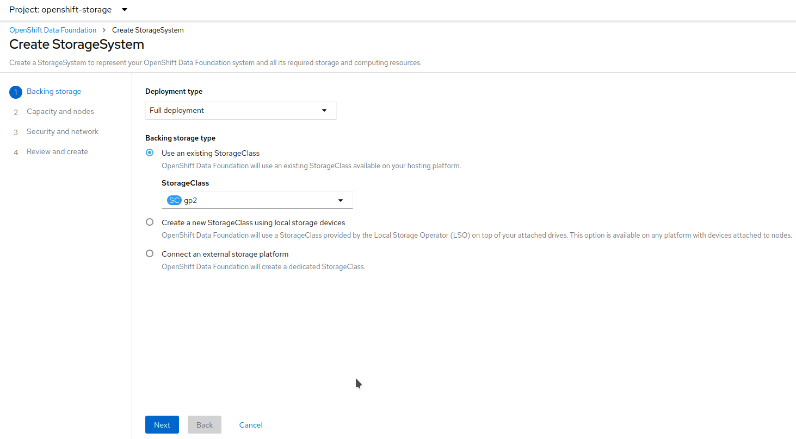
-
Select the capacity and the nodes. The selected nodes will be labeled with
cluster.ocs.openshift.io/openshift-storage="". Click Next.
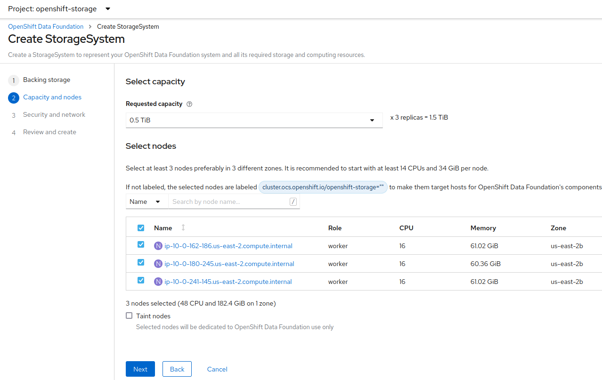
-
Data encryption is not needed for this workshop. Click Next.
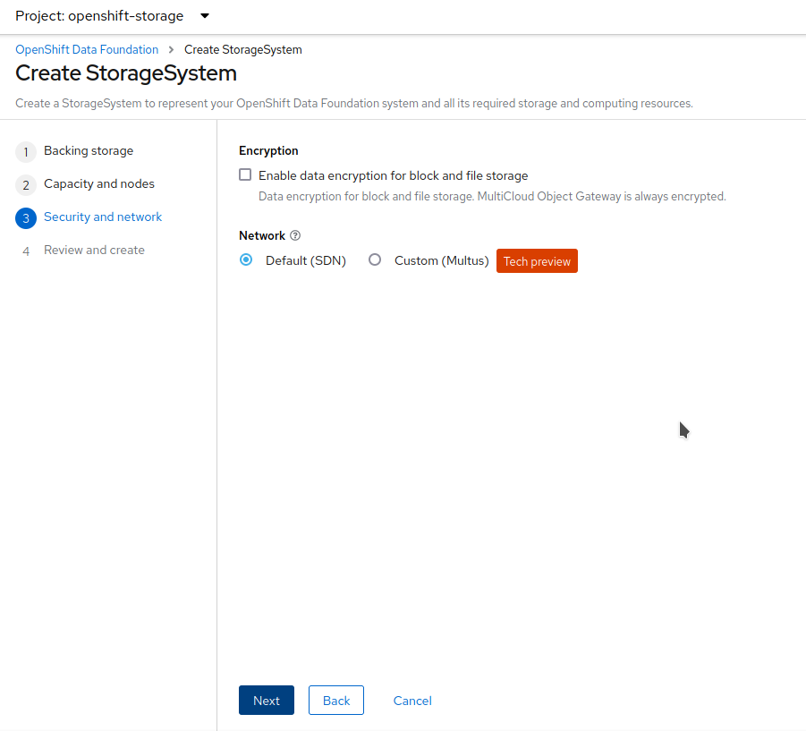
-
Click on
Create StorageSystem.
Installing Quay Operator
You can use the OpenShift Container Platform web console to suscribe and deploy the Red Hat Quay Operator.
-
Open a browser window and log in to the OpenShift Container Platform web console.
-
From the Administrator perspective, click Operators → OperatorHub.
-
In the Filter by keyword field, type Red Hat Quay.
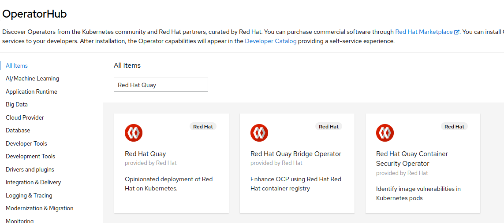
-
Select the Red Hat Quay tile and click Install.
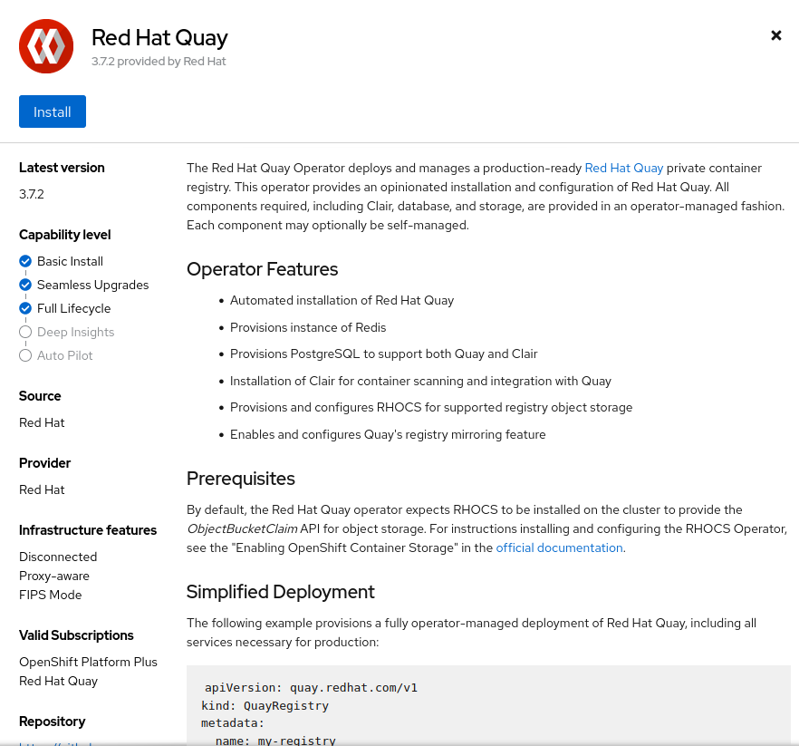
-
On the Install Operator page select
stable-3.7from the list of available Update Channel options. ChooseAll namespaces on the cluster (default)as installation mode. ChooseAutomaticupdate approval.
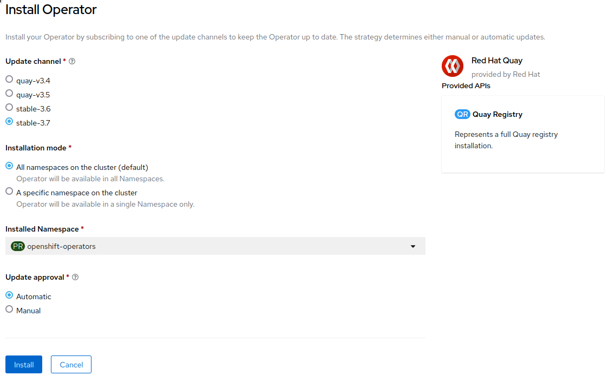
-
Click
Install.
Deploying Quay
-
Create a
quay-workshopproject. -
From the Administrator perspective, click Operators → Installed Operators. Project:
quay-workshop. Select Red Hat Quay operator. -
Click on Create instance (Quay Registry).
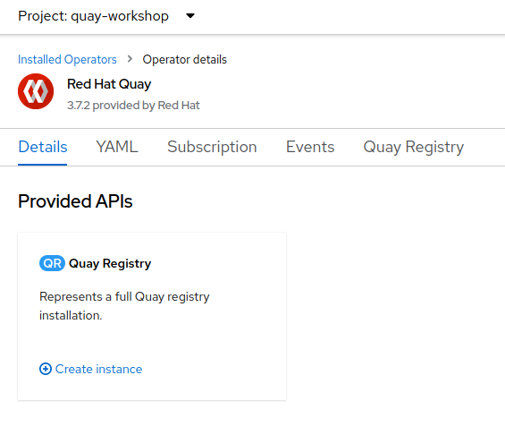
-
Change the Name if desired. Click on Create.
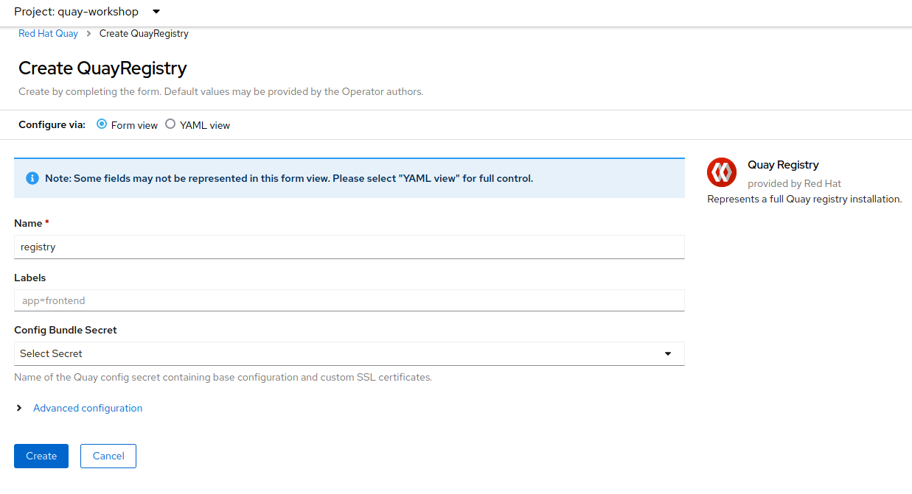
| If the init container fails when deploying the Quay registry, check if a LimitRange exist in the OCP project. The RHPDS environment creates one automatically. |